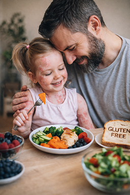

Ce cours explore des stratégies nutritionnelles, environnementales et de mode de vie fondées sur des preuves scientifiques qui peuvent aider à soutenir la gestion du psoriasis. Découvrez comment les habitudes alimentaires, l’inflammation, le microbiote intestinal, les antioxydants et l’équilibre du système nerveux peuvent influencer les maladies cutanées auto-immunes.